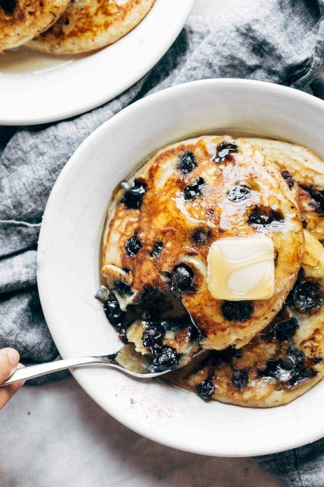

looking for a breakfast that will quel even the pickiest eater, this is your answer

ingredients
3/4 cup milk
2 tablespoons white vinegar
1 cup flour
2 tablespoons sugar
1 teaspoon baking powder
1/2 teaspoon baking soda
1/2 teaspoon salt
1 egg
2 tablespoons melted butter
1+ cup fresh blueberries
more butter for the pan

directions
Mix the milk and vinegar and let it sit for a minute or two (you’re making “buttermilk” here).
Whisk the dry ingredients together. Whisk the egg, milk, and melted butter into the dry ingredients until just combined.
Heat a nonstick pan over medium heat. Melt a little smear of butter in the pan (essential for giving a yummy golden brown crust).
Pour about 1/3 cup of batter into the hot skillet and spread it flat-like (it will be pretty thick). Arrange a few blueberries on top. Cook until you see little bubbles on top and the edges starting to firm up. Flip and cook for another 1-2 minutes until the pancakes are sky-high fluffy and cooked through.
Serve with butter and maple syrup. But honestly, sometimes I just like to eat these plain. YUM, YUM, YUM.